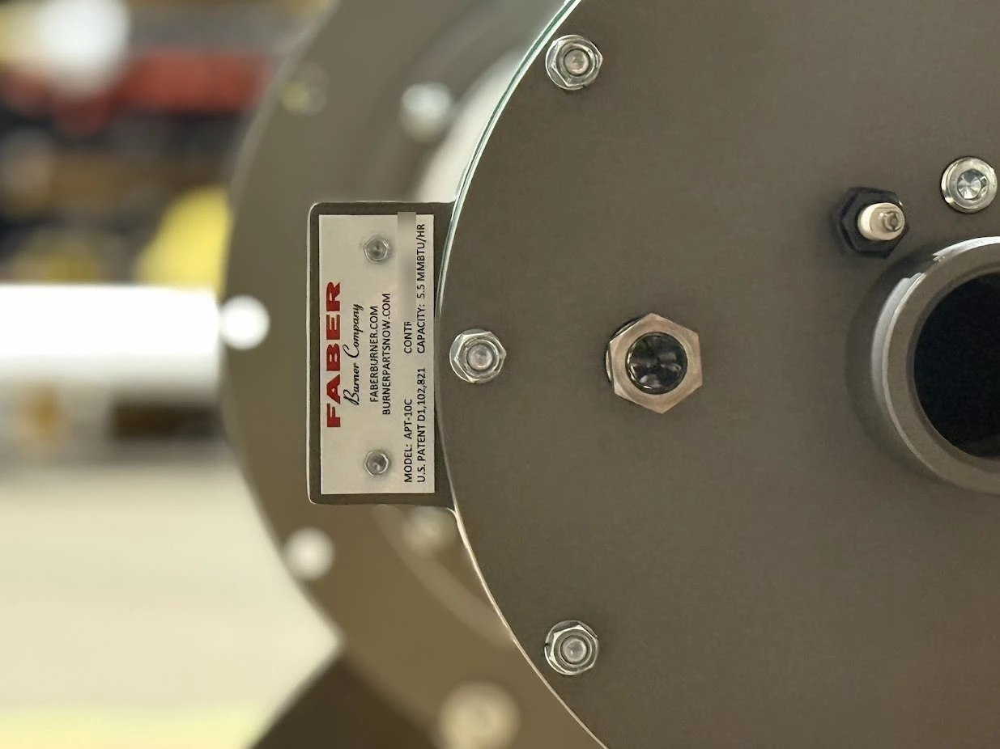
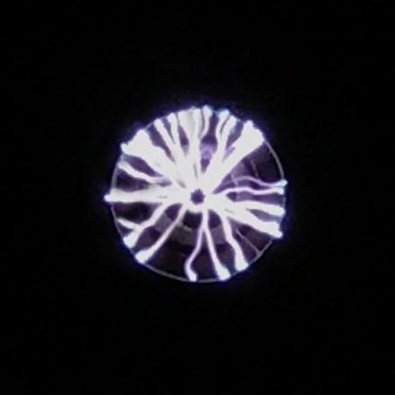
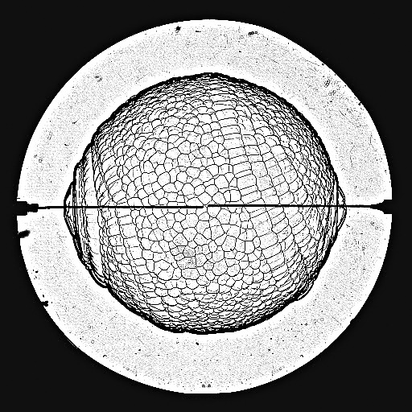

PatentDiffuser plateS. Zare, T. A. Probst, J. ColanninoU.S. Design Patent D1,102,821 S, issued November 25, 2025; assigned to Faber Burner Company
PDF ↗- 8+years in industry
- 3U.S. patent filings, 1 granted
- 7peer-reviewed journal articles
- 170+citations
Expertise
Thermal-fluids
Heat transferthermodynamicsfluid mechanicscombustionburner designemissions (NOx) reduction
Simulation
CFD (Ansys Fluent, OpenFOAM)chemical kinetics (Cantera)design of experimentsuncertainty analysisstatistics
Testing
Test-facility developmenttest proceduresPLIFPIVschlieren and OH chemiluminescence imaging
R&D leadership
Product developmentpatentsproject planning (PERT, MS Project)team supervisiontechnical communication with customers and marketing
Software
SolidWorksCATIAPro/ENGINEERPythonMATLABFortran
Research and projects

Industry · 2021 to now
Industrial burner development
Developing burner product families at Faber Burner Company, from concept through CFD simulation and combustion testing, with a focus on lower NOx emissions. Three U.S. patent filings, one granted.
Read the project →
Ph.D. · NASA-funded
Plasma-assisted combustion
Using nanosecond repetitively pulsed plasma to stabilize methane/air inverse diffusion flames in a coaxial injector, with methane rocket engines in mind: the plasma reduced flame liftoff and raised the blowoff velocity. Also mapped the discharge's modes and studied spark-ignition plasma.
Read the project →
Ph.D. · Biofuels
Laminar burning speed of biofuels
Measured the laminar burning speed, flame structure and stability of anisole-air flames from 0.5 to 5.5 atm and 460 to 550 K with schlieren imaging in a constant-volume chamber, and modeled how ethanol and 2,5-dimethylfuran change the burning speed and ignition delay of iso-octane.
Read the project →Honors and awards
Award for Technical Merit
11th U.S. National Combustion Meeting, Pasadena, CAFlame Garden: diffusion flames from a nanosecond discharge plasma-assisted burner, with the plasma off and at 1.5 and 5.0 kHz. With S. Roy and O. Askari.
Award for Artistic Merit
Spring Technical Meeting, Central States Section of the Combustion Institute, Minneapolis, MNAnisolography: an anisole/air flame growing and turning cellular in a constant-volume combustion chamber. With O. Askari.
2019
Preparing the Future Professoriate Program Award
Bagley College of Engineering, Mississippi State University · $21,600; one of two Ph.D. candidates selected.Experience
Senior Research and Development Engineer
May 2025 to nowBurner Development/Design Engineer
May 2021 to May 2025Faber Burner Company, Lock Haven, PA
- Developed two burner product families, taking each from concept through CFD simulation and combustion testing.
- Improved the NOx performance of the company's burners.
- Ran Ansys Fluent CFD simulations and burner combustion tests to evaluate the flow, combustion and emissions performance of new designs.
- Expanded the R&D test facilities and improved the R&D test procedures.
- Co-inventor on three U.S. patent filings, including U.S. Design Patent D1,102,821.
- Built burner-sizing software that engineering and marketing use to select burners for customer applications.
- Developed customer support programs, updated the technical communication sheets sent to customers, and designed and launched the company's new website.
Graduate Research Assistant and Laboratory Manager
Aug 2017 to Aug 2021Mississippi State University, Mississippi State, MS
- Managed the Plasma and Combustion Research Laboratory and supervised seven graduate and undergraduate students.
- Carried out a NASA-funded study of nanosecond pulsed plasma discharges for stabilizing inverse diffusion flames.
- Used schlieren, PLIF, PIV and OH chemiluminescence imaging, paired with chemical-kinetics and CFD modeling (Cantera, Ansys Fluent).
- Instructor of record for Thermodynamics II (three semesters, 130 students) and Intermediate Heat Transfer; teaching assistant for Internal Combustion Engines.
Earlier
R&D Researcher and Commercial Manager, Avin Exon Pars Ltd., Iran · 2015 to 2017Designed product accessories to customer requirements; sourced vendors and prepared sales plans.
Aerodynamicist, Sun and Air Research Institute, Iran · 2010 to 2011, 2013 to 2016Conceptual design of a two-seat ultralight aircraft, performance and flight-dynamics analysis, wind-tunnel testing.
Graduate Research Assistant, Ferdowsi University of Mashhad, Iran · 2012 to 2016Drop-impact and fluid-fluid interface experiments using planar laser-induced fluorescence (PLIF).
Founding Member and Engineer, Hakat Gostar, Iran · 2011 to 2014
Patents and publications
PatentCombustion system with airflow eductor for pollution reductionJ. Colannino, S. Zare, T. A. ProbstU.S. Patent Application No. 19/237,972, filed June 13, 2025
PatentCombustion system with mixing and flame arresting for pollution reductionJ. Colannino, S. Zare, T. A. ProbstU.S. Patent Application Publication 2024/0167679 A1, published May 23, 2024 (Appl. No. 18/512,459); assigned to Faber Burner Company
Google Patents ↗Journal articleExperimental and numerical study of stabilized flame in inverse coflow turbulent jet using nanosecond repetitively pulsed dischargesS. Zare, N. Druker, J. Lefkowitz, O. AskariCombustion and Flame, 266 (2024) 113515
DOI ↗Journal articleMode transition and uncertainty analysis of repetitive nanosecond pulsed dischargeS. Zare, O. AskariJournal of Electrostatics, 118 (2022) 103736
DOI ↗Journal articleElectrode design for thermal and nonthermal plasma discharge inside a constant volume combustion chamberJ. Shaffer, O. Askari, S. ZareJournal of Energy Resources Technology, 144(8) (2022) 082306
DOI ↗Journal articleOn the low-temperature plasma discharge in methane/air diffusion flamesS. Zare, H. W. Lo, S. Roy, O. AskariEnergy, 197 (2020) 117185
DOI ↗Journal articleFlame stability in inverse coaxial injector using repetitive nanosecond pulsed plasmaS. Zare, H. W. Lo, O. AskariJournal of Energy Resources Technology, 142(8) (2020) 082101
DOI ↗Journal articleAn investigation on laminar burning speed and flame structure of anisole-air mixtureS. Zare, S. Roy, A. El Maadi, O. AskariFuel, 244 (2019) 120–131
DOI ↗Journal articleUnderstanding the effect of oxygenated additives on combustion characteristics of gasolineS. Roy, S. Zare, O. AskariJournal of Energy Resources Technology, 141(2) (2019) 022205
DOI ↗Conference paperModeling discharge spark ignition using zero dimension thermodynamic model and experimental power measurements at various pressuresJ. Shaffer, S. Zare, O. AskariASME IMECE2021, 2021
DOI ↗Conference paperStructure and measurement of atmospheric and high-pressure ignition plasmaJ. Shaffer, S. Zare, O. AskariASME IMECE2021, 2021
DOI ↗Conference paperInstability study of repetitive nanosecond pulsed discharge plasma in a plasma assisted burnerS. Zare, O. AskariASME IMECE2020, 2020
DOI ↗Conference paperFlame stability in inverse coaxial injector using repetitive nanosecond pulsed plasmaS. Zare, H. W. Lo, S. Roy, O. AskariASME IMECE2019, Salt Lake City, UT, 2019
DOI ↗Conference paperUnderstanding the effect of oxygenated biofuels addition on combustion characteristics of gasolineS. Roy, S. Zare, O. AskariASME IMECE2018, 2018
DOI ↗Conference paperExperimental and numerical investigation of flame kernel formation and propagation in methane/air mixturesS. Zare, S. Roy, L. A. Onigbanjo, O. AskariSpring Technical Meeting, Central States Section of the Combustion Institute, Minneapolis, MN, 2018
Conference paperExperimental study of water drop penetration on water surface using planar laser induced fluorescenceS. Zare, M. Passandideh-Fard24th Annual International Conference on Mechanical Engineering (ISME2016), Yazd, Iran, 2016
Conference paperExperimental study of water drop penetration following drop impact on water surface using planar laser induced fluorescenceS. Zare, M. Passandideh-Fard16th Conference on Fluid Dynamics (FD2015), Iran, 2015
Conference presentationExperimental study of repetitive nanosecond pulsed discharge on inverse diffusion flameSpring Technical Meeting, Central States Section of the Combustion Institute, 2020
Conference presentationUnderstanding the effect of nanosecond pulsed discharge on ignition and flame stability of methane jet flames11th U.S. National Combustion Meeting, Pasadena, CA, 2019
Conference presentationOn the laminar burning speed and spherical flame structure of anisole-air premixed mixture11th U.S. National Combustion Meeting, Pasadena, CA, 2019
Conference presentationEffect of capacitive discharge ignition on plasma combustion of propane-air mixture11th U.S. National Combustion Meeting, Pasadena, CA, 2019
Conference presentationDevelopment of a new chemical mechanism for ethanol-air mixture in a wide range of temperature and pressure11th U.S. National Combustion Meeting, Pasadena, CA, 2019
Conference presentationExperimental study on laminar burning speed for anisole/air mixtureSpring Technical Meeting, Central States Section of the Combustion Institute, Minneapolis, MN, 2018
arXiv ↗Education
2021
Ph.D., Mechanical Engineering
Mississippi State University
GPA 4.0/4.0 · Dissertation: Experimental Study of Laminar Burning Speed and Plasma-Stabilized Flame
2016
M.Sc., Mechanical Engineering (Energy Conversion)
Ferdowsi University of Mashhad, Iran
Thesis: Experimental Study of Drop Impact and Penetration into a Water Surface Using PLIF
2012
B.Sc., Mechanical Engineering (Thermo-Fluids)
Ferdowsi University of Mashhad, Iran
Thesis: Aerodynamic Study of Bird Flight Applied to the Cinereous Vulture
Certifications
- Google AI Essentials, Google2025
- Introduction to Statistics, Stanford University2025
- Python Data Structures, University of Michigan2024
- Programming for Everybody, University of Michigan2024
- Applied Computational Fluid Dynamics, Siemens2023